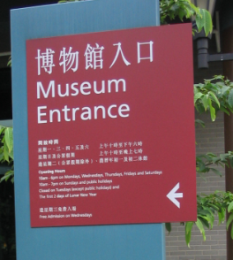

|
Problem F : Museums |
|
Time limit: 10 seconds |
- Museums Guide Book, LCSD, 2003
 You are on holiday, and being a culture lover, you decide to visit some museums this afternoon. You have the Museums Guide Book on hand, in which details of all museums are included. To each museum you have also assigned a "fun index", ranging from 1 to 9, describing how interesting it is.
Everything seems fine except that you have a pretty low budget, as you need to save up money to buy manga books. What's worse, the time you can use is also limited, thus you may not be able to visit all museums. As a result, you will need to plan your trip carefully such that the "fun" you can get is maximized, i.e. the total "fun index" of all places you visit is the greatest.
Here are some guidelines for your planning. Firstly, since you will travel in your car, you will assume the transport cost to be $0. Secondly, you will need to spend at least 15 minutes at the museum for each visit - you've really got to look at the exhibits! Thirdly, you should not visit any museum more than once, although you may travel past it many times. Last but not least, your trip should start and end both at your home.
You see that planning the trip is a real torture to your mind, so you need to write a program that helps you with it. Given the details of all museums and roads as well as the restrictions on money and time, your program should find the maximum "fun" you can get.
Input consists of several test cases. The first line of the input file gives the number of cases.
The first line of each case gives four positive integers d, t, n and m. d is the amount of money you can spend (in dollars), which will not exceed 100. t is the time limit for your trip (in minutes), which can be up to 600. n gives the number of museums in your list, which will always be less than 13. Finally, m is the number of roads, which has a upper limit of n (n+1) / 2.
Next comes n lines, each with two integers specifying the admission fee (in dollars, not greater than 50) and "fun index" of a museum.
Each of the following m lines of the input has three integers i, j and k, which means that a bidirectional road connects nodes i and j, and it takes k (≤ 200) minutes for your car to go through it. In this problem we define node 0 as the position of your home, and node i as the i-th museum in your above list. Please note that some (but not all) museums might NOT be reachable from your home at all, so be careful. Moreover, no roads will connect a node to itself, but there might be more than one road between two nodes.
For each test case, your program should output the maximum fun you can get. If you cannot visit any museum at all, output "No possible trip." instead.
2 50 120 4 4 15 8 5 4 0 2 15 5 0 1 3 0 4 8 1 3 5 2 4 70 50 2 4 4 15 8 5 4 0 2 15 5 0 1 3 0 4 8 1 3 5 2 4 70
Case 1: 15 Case 2: No possible trip.